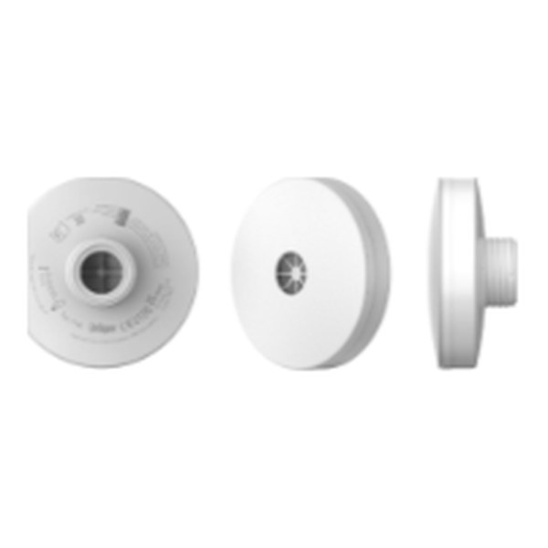
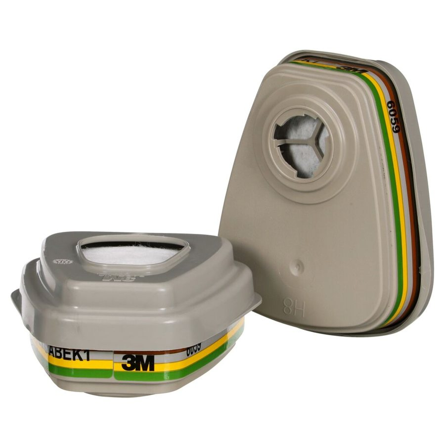
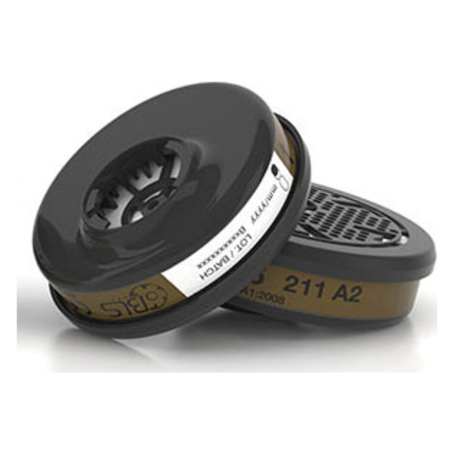
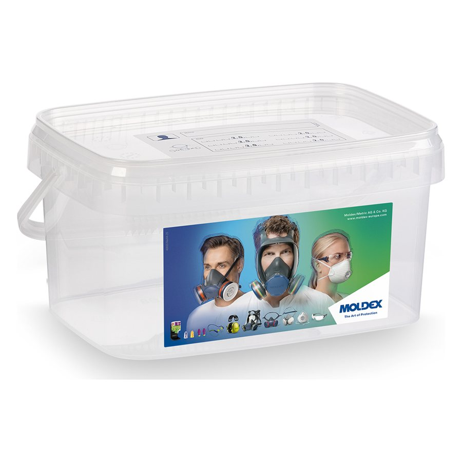
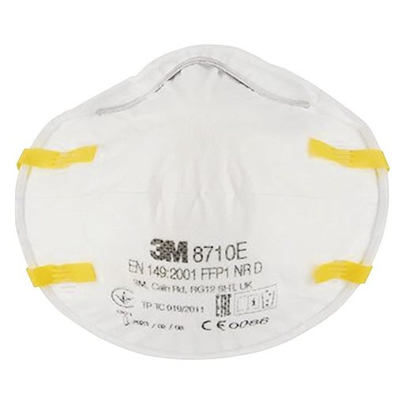
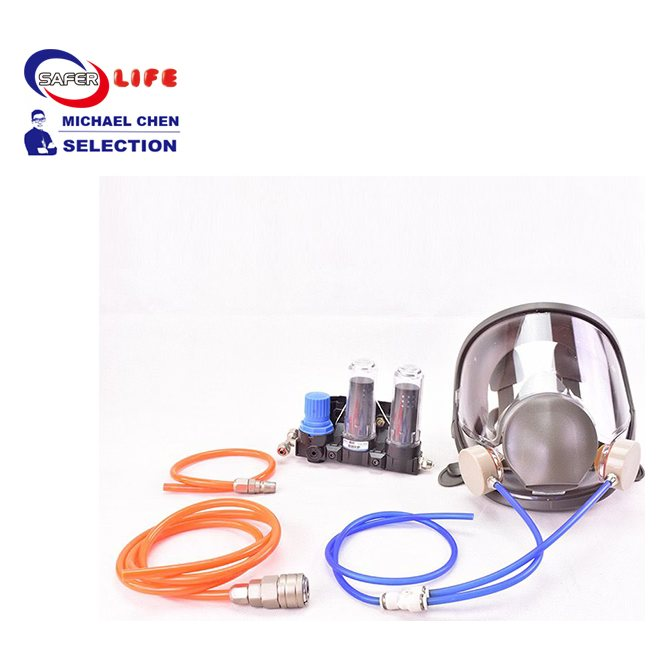
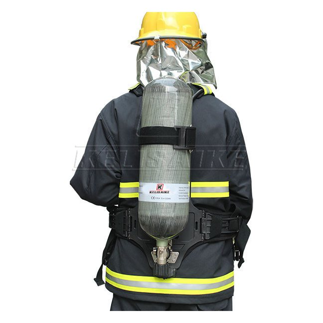

Illustration similar – shows the product type.
Powered air-purifying respirator with hood/helmet (PAPR)
Battery-powered blower respirator with hood or helmet for long shifts in asbestos, mould and fine-dust work – no skin seal required, suitable for beard wearers.
Powered respirators with hood or helmet (EN 12941, category TH) deliver filtered air under slight positive pressure over head and face; the loose-fitting headtop needs no skin seal, suits beard wearers and noticeably reduces strain on long shifts in asbestos remediation, mould remediation, strip-out and dust work. High-quality systems offer a constant flow of at least 120 l/min, alarms for clogged filters and low battery, a washable or decontaminable hood or a safety helmet with visor and a battery lasting at least one shift. Professional users in Germany expect EU type-examination to EN 12941 with class TH2 or TH3 for the complete system including the supplied headtop, available replacement filters, batteries and hoods, and German-language service. NIOSH approvals and GB standards do not apply in the EU; for asbestos work with high exposure TRGS 519 requires TH3P or TM3P devices.
Technical data
| Headtop | Hood (soft hood, welding or medical hood) or helmet with visor |
|---|---|
| Air flow | ≥ 120 l/min (standard) |
| Particle filter | HEPA, > 99.97 % at 0.3 µm |
| Gas filter | Activated carbon approx.; 100 g in the filter tank |
| Battery | 12 V / 3,400 mAh Li-ion, > 4 h at full power, > 200 charge cycles |
| Scope of delivery | Blower with 3 replacement filters |
| Customs tariff number (HS) | 90200090 |
EU standards and regulations
EU 2016/425PPE Regulation, category III, CE with NB numberEN 12941:1998+A2:2008Power assisted filtering devices with a helmet or a hood (TH)EN 143:2021Particle filters – requirements, testing, marking2014/30/EUEMC Directive (blower electronics)UN 38.3 / IEC 62133Lithium battery: transport and cell safetyTRGS 519Asbestos: TH3P/TM3P devices for high exposureDGUV Regel 112-190Use of respiratory protective devices
More products in this category











